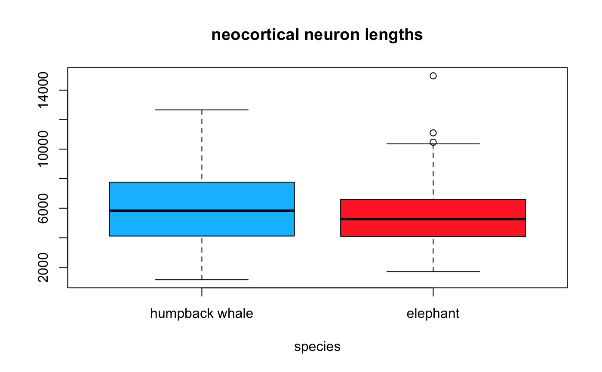

For each neuron corresponding to a given neuron name or neuron ID, return a list of measurements stored on neuromorpho.org. See details for the sort of measurements you can get.
neuromorpho_morphometry(neuron_name = NULL, neuron_id = NULL, batch.size = 10, data_frame = TRUE, neuromorpho_url = "http://neuromorpho.org", progress = TRUE, ...)
| neuron_name | a neuron name, or vector of neuron names, as recorded in the neuromorpho database. Names and neuron IDs
can be found by searching the repository, for example via |
|---|---|
| neuron_id | a neuron ID, or vector of neuron IDs, as recorded in the neuromorpho database. If neuron_name is given
this supersedes |
| batch.size | the number of requests sent at once to the neuromorpho.org, using |
| data_frame | if |
| neuromorpho_url | the base URL for querying the neuromorpho database, defaults to http://neuromorpho.org |
| progress | if |
| ... | methods passed to |
a list of measurements for a neuron, or a list of lists if neuron_name/neuron_id is a vector with more than one element
neurmorpho.org calculates some basic measures for neuronal skeleton reconstructions. Distances are given in micrometers, and angles in °. Typical measures: #'
neuron_name
neuron_id
surface (micrometers^2) -- Total arborisation surface area
volume (micrometers^3) -- Total internal volume of the arborisation
n_branch -- Total number of branches
width (micrometers) -- Neuronal width (95
height (micrometers) -- Neuronal height (95
depth (micrometers) -- Neuronal depth (95
diameter (micrometers) -- Average branch diameter
eucDistance (micrometers) -- Maximum Euclidean (straight) distance from soma to tips
pathDistance -- Maximum Path (along the tree) distance from soma to tips
branch_Order -- Maximum Branch order (number of bifurcations from soma to tips)
contraction -- Average Contraction (the ratio between Euclidean and path length calculated on each branch)
fragmentation -- Total number of reconstruction points
partition_asymmetry -- Topological asymmetry (average over all bifurcations of the absolute value of (n1-n2)/(n1+n2-2), where n1 and n2 are the numbers of tips in the two subtrees)
Rall -- Rall's Ratio (average over all bifurcations of the sum of the diameters of the two daughters, elevated to 1.5, divided by the diameter of the parent, elevated to 1.5)
pk_classic
bif_ampl_local
fractal_Dim
soma_Surface (micrometers^2) -- Soma surface area
n_stems -- Total number of branches (bifurcations plus terminations)
n_bifs -- Total number of bifurcations
bif_ampl_remote
length (micrometers) -- Total arborisation length
Local Bifurcation angle (average over all bifurcations of the angle between the first two daughter compartments)
Remote Bifurcation angle (average over all bifurcations of the angle between the following bifurcations or tips)
Neurons may also be searched by their morphological measures via the web browser at http://neuromorpho.org/MorphometrySearch.jsp
For exact definitions and/or more information about these measurements, please visit the L-Measure website. Note that each of these parameters is extracted from the whole neuron (axon plus dendrites).
# Let's get some measurements for the # let's get neocortical neurons from both the African elephant and the humpback whale big.neocortex.df = neuromorpho_search(search_terms= c("species:elephant,humpback whale", "brain_region:neocortex")) ## Pull measurements, in a data frame measurements = neuromorpho_morphometry(big.neocortex.df$neuron_name, data_frame = TRUE)#> Warning: Currently, the infastructure of neuromorpho.org cannot support too many requests at once, #> and does not have support for rate limiting. The API would be fine with 5 times per second #> and the web page once every 5 seconds. To prevent crashing the site, batch.size <= 5 is preferable, #> yours is 10#> |++ | ~4% pulling neuromorpho measurements |++++ | ~8% pulling neuromorpho measurements |++++++ | ~12% pulling neuromorpho measurements |++++++++ | ~16% pulling neuromorpho measurements |++++++++++ | ~20% pulling neuromorpho measurements |++++++++++++ | ~25% pulling neuromorpho measurements |++++++++++++++ | ~29% pulling neuromorpho measurements |++++++++++++++++ | ~33% pulling neuromorpho measurements |++++++++++++++++++ | ~37% pulling neuromorpho measurements |++++++++++++++++++++ | ~41% pulling neuromorpho measurements |++++++++++++++++++++++ | ~45% pulling neuromorpho measurements |+++++++++++++++++++++++++ | ~50% pulling neuromorpho measurements |+++++++++++++++++++++++++++ | ~54% pulling neuromorpho measurements |+++++++++++++++++++++++++++++ | ~58% pulling neuromorpho measurements |+++++++++++++++++++++++++++++++ | ~62% pulling neuromorpho measurements |+++++++++++++++++++++++++++++++++ | ~66% pulling neuromorpho measurements |+++++++++++++++++++++++++++++++++++ | ~70% pulling neuromorpho measurements |+++++++++++++++++++++++++++++++++++++ | ~75% pulling neuromorpho measurements |+++++++++++++++++++++++++++++++++++++++ | ~79% pulling neuromorpho measurements |+++++++++++++++++++++++++++++++++++++++++ | ~83% pulling neuromorpho measurements |+++++++++++++++++++++++++++++++++++++++++++ | ~87% pulling neuromorpho measurements |+++++++++++++++++++++++++++++++++++++++++++++ | ~91% pulling neuromorpho measurements |+++++++++++++++++++++++++++++++++++++++++++++++ | ~95% pulling neuromorpho measurements |++++++++++++++++++++++++++++++++++++++++++++++++++| ~100% pulling neuromorpho measurements## Assign species column measurements$species = big.neocortex.df[rownames(measurements),"species"] ## Boxplot boxplot(as.numeric(length)~species, data=measurements, notch=FALSE, col=(c("deepskyblue1","firebrick1")), main="neocortical neuron lengths", xlab="species")